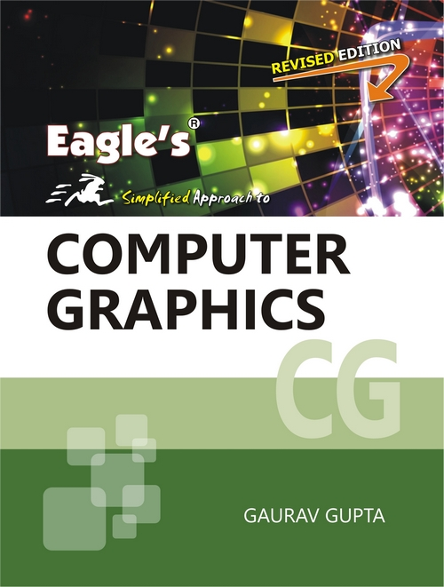
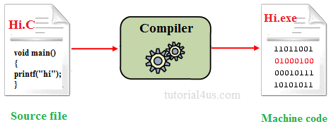

-

Computação Gráfica
Temas para XI Feira Tecnologica FGF
-

Desenvolviemnto para Dispositivos Móveis
Temas para XI Feira Tecnologica FGF
-

Inteligência Artificial
Temas para XI Feira Tecnologica FGF
-

Compiladores
Temas para XI Feira Tecnologica FGF
-

Engenharia de Software
Temas para XI Feira Tecnologica FGF
Computação Gráfica
Lista

- Aplicação dos algoritmos de Bresenham's e Mid Point na implementação de primitivas gráficas
- Uma visão geral sobre coordenadas homogêneas: Aplicação em computação gráfica
- Contribuições da algebra linear e do cálculo diferencial e integral em computação gráfica
- Visão geral sobre API's gráfica: Uma comparação entre OpenGL e Direct3D
- Iluminação em computação gráfica: implementação do modelo de Phong em OpenGL
- Uma visão geral sobre Realidade Virtual e VRML
- Ray tracing com OpenGL